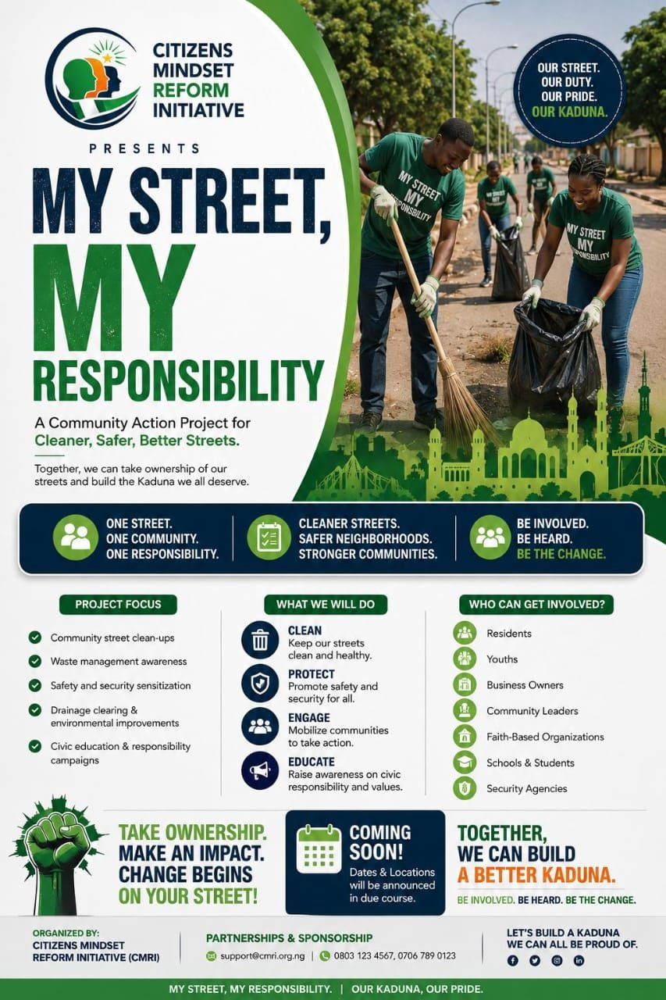

Gallery


On the ground
A Community Civic Ownership & Social Behaviour Change Programme by CMRI

My Street, My Responsibility is a community-led civic ownership programme designed to encourage citizens, especially young people, to protect, maintain and take responsibility for public assets within their communities.
Public infrastructure such as streetlights, roads, water facilities, schools, health centres, waste bins and public spaces should not be seen as “government property” alone. They are community assets that require collective care and protection.
The programme mobilises and equips young people as “Youth Champions”, community advocates (not enforcement officers) who help to:
Raise community awareness about public assets.
Encourage responsible use of public facilities.
Encourage residents to protect what belongs to everyone.
Identify and report damage or misuse.
Mobilise community participation.
Promote positive social behaviour.
The initial pilot begins in Kaduna North Local Government Area, in Kawo, Unguwan Sarki and Unguwan Shanu. It will build a network of 75 Youth Champions, with at least 25 drawn from each participating ward, and use baseline and endline assessments, community reporting and field evidence to track change.
CSR & Adopt-a-Ward: organisations can support a Youth Champion, Ward, LGA or State, helping communities build stronger ownership of public infrastructure.
Test and refine the model in Kaduna.
Extend to additional communities and LGAs.
Build stronger partnerships with government, business, CSOs and community institutions.
Expand into additional states.
A national civic ownership movement of citizens and Youth Champions.
Communities where citizens do not wait for government alone to protect public infrastructure.
Call, SMS or WhatsApp CMRI on +234 907 900 0514